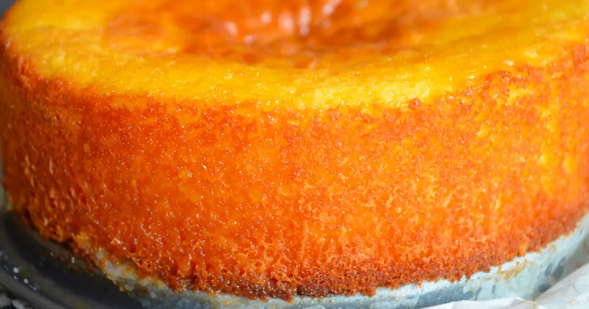

Bolo de verdade é bolo de Laranja!

Bolo de Laranja:
Ingredientes:
- 1 e 1/2 xícara de chá de farinha
- 1 e 1/2 colheres de chá de fermento
- 3/4 de xícara de açúcar
- 75g de manteiga
- 2 ovos
- 1 colher de sopa de raspas de laranja
- 1/3 de xícara de chá de leite
- 1/2colher de chá de extrato de baunilha (opcional)
- Uma boa pitada de sal
Modo de preparo:
1- Em uma tigelinha, misture as raspas da laranja com o açúcar até formar uma farofinha.
2- Coloque na batedeira com a manteiga (que deve estar em ponto pomada) e bata até obter um creme pálido e fofinho.
3- Adicione os ovos, um de cada vez, batendo bem.
4- Junte o extrato de baunilha e o de laranja (não é obrigatório, mas se tiver vai ficar mais saboroso!).
5- Agora adicione os ingredientes secos (farinha, fermento e sal) passando por uma peneira e alternando com o leite e o suco: um pouco dos ingredientes secos, o leite inteiro, mais um pouco dos secos, o suco inteiro e por fim o restante dos secos.
6- Despeje em uma forma untada e enfarinhada e leve para assar em forno pré-aquecido a 180 graus de 40-45 minutos.
7- Espere esfriar, desenforme e bom apetite!
Informações adicionais.
- Você poderá servir Bolo de Laranja no café da manhã: